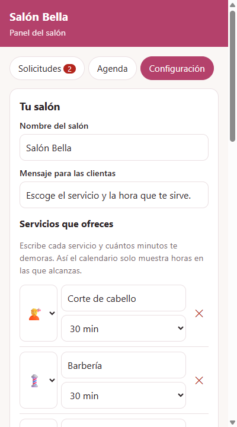
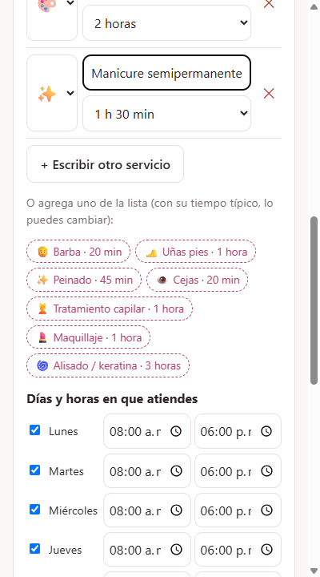
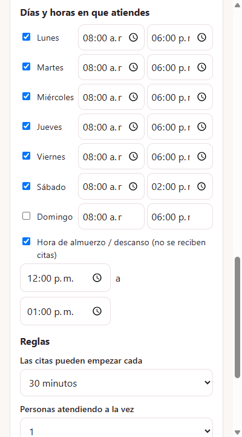
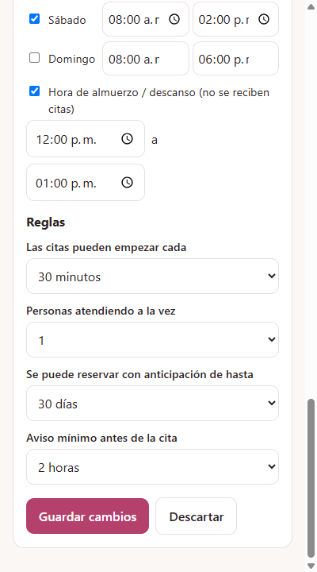
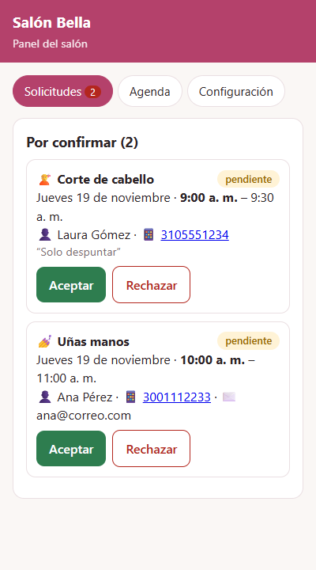
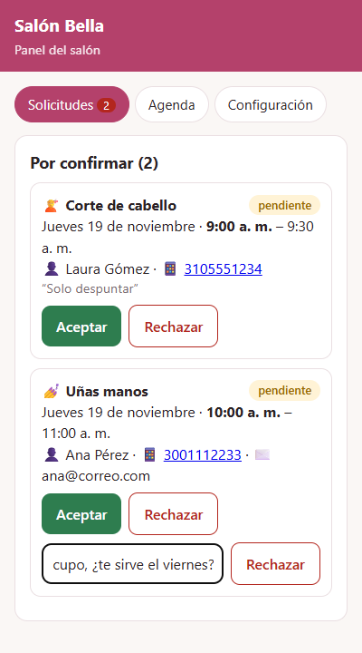
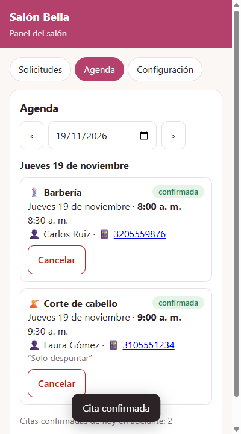

Antes de empezar: todo esto se hace en Configuración, una sola vez. Si después cambias algo (un servicio nuevo, otro horario), entras y lo cambias cuando quieras.

Pon el nombre de tu salón
Toca la pestaña Configuración.
- Nombre del salón: es lo que tus clientas ven arriba de la página.
- Mensaje para las clientas: una frase corta de bienvenida. Por ejemplo: "Escoge el servicio y la hora que te sirve."

Escribe tus servicios y cuánto demoras
Cada servicio aparece como un botón en el menú de tus clientas. Hay dos formas de agregarlos:
- De la lista: toca uno de los botones con borde punteado (Barba, Cejas, Uñas pies…). Ya traen un tiempo típico.
- Escribiéndolo: toca + Escribir otro servicio y escribe el nombre que quieras.
En cada servicio puedes:
- Escoger el dibujito de la izquierda.
- Escoger cuánto te demoras (30 min, 1 hora, 2 horas…).
- Quitarlo con la ✕.
💡 ¿Por qué importa el tiempo? La agenda solo ofrece las horas en las que alcanzas a terminar. Si una tintura dura 2 horas y cierras a las 6, no la ofrece a las 5.

Marca los días y horas en que atiendes
- Marca con ✔ los días que abres. Los días sin marca no aparecen para tus clientas.
- En cada día pon la hora en que abres (izquierda) y la hora en que cierras (derecha).
- Hora de almuerzo / descanso: si la marcas, en ese rato no se reciben citas.

Ajusta las reglas y guarda
- Las citas pueden empezar cada: cada cuánto se ofrece una hora (8:00, 8:30, 9:00…).
- Personas atendiendo a la vez: si trabajan 2 personas, pon 2. Así se pueden agendar dos clientas a la misma hora.
- Anticipación: hasta cuántos días adelante pueden reservar.
- Aviso mínimo: por ejemplo, con "2 horas" nadie te pide una cita para dentro de 20 minutos.
Al terminar toca Guardar cambios. Abajo sale el aviso "Configuración guardada ✔".
⚠️ Si algo queda en rojo, la agenda te dice qué corregir. Por ejemplo, una hora de cierre antes que la de apertura.

Acepta o rechaza las solicitudes
Cuando una clienta pide cita, te llega a la pestaña Solicitudes. El número rojo te dice cuántas tienes sin responder.
En cada solicitud ves el servicio, el día, la hora, el nombre, el celular (lo tocas para llamarla) y la nota que te dejó.
- Aceptar: la cita queda confirmada y pasa a tu agenda.
- Rechazar: mira el paso siguiente.

Si rechazas, explícale por qué
Al tocar Rechazar sale un cuadrito para escribir el motivo. No es obligatorio, pero ayuda a que la clienta vuelva a pedir. Por ejemplo: "Ese día no tengo cupo, ¿te sirve el viernes?"
Toca otra vez Rechazar para enviarlo. La clienta ve el motivo en su pantalla.
💡 Si aceptas una cita que se cruza con otra, la agenda te pregunta antes: "Se cruza con otra cita. ¿Aceptar igual?"

Mira tu agenda del día
En la pestaña Agenda ves las citas confirmadas, ordenadas por hora.
- Cambia de día con las flechas ‹ › o tocando la fecha.
- Si necesitas cancelar una cita, toca Cancelar y luego otra vez para confirmar. Esa hora queda libre para otra clienta.
Resumen
- Configura una vez: nombre, servicios, horario y reglas.
- Revisa Solicitudes varias veces al día y responde rápido.
- Mira tu Agenda cada mañana.
Versión de prueba 0.1. Por ahora los datos se guardan en el mismo computador o celular donde se abre la agenda. En la próxima versión las solicitudes te llegarán al celular.